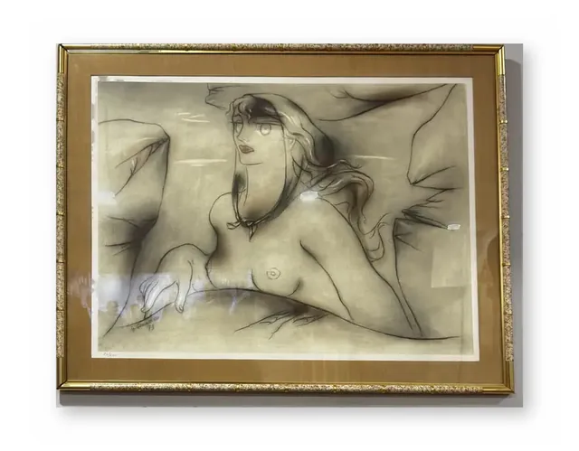
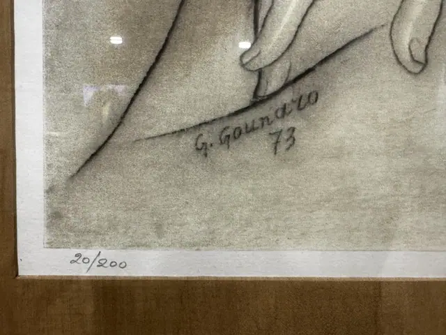

Paintings & Prints
Reclining Nude Charcoal Drawing, Signed and Numbered, Gold Frame, 1973
G. Gounaro · 1973
Price Upon Request


About the Item
G. GOUNARO. Reclining nude, charcoal on paper, signed and dated lower right 'G. Gounaro 73', numbered 20/200. Presented in a gold moulded frame under glass. Horizontal format.
Details
- Creator:
- G. Gounaro
- Creation Year:
- 1973
- Dimensions:
- Height: 29.5 in (74.93 cm)
Width: 37.75 in (95.89 cm)
outside of frame - Edition:
- 20/200
- Period:
- 20Th
- Condition:
- Offered in the condition shown in the photographs.
- Reference Number:
- VO-01